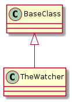

The Watcher is a module to watch the output of a (blocking) command. It is similar to the Dump but is intended to run in a thread so that other code can be running as well. It’s initial intention is to watch blocking log-calls (like kmesg).
Some constants put into a class so other modules can get them.
class WatcherConstants(object):
"""
Constants for the Watcher
"""
__slots__ = ()
# defaults
default_identifier = 'watcher'
default_mode = WRITEABLE
# options
example = textwrap.dedent("""
#[watcher]
# comment this section out if you don't want a watcher
connection = <section with connection information for the device>
# for the command you should use the form:
# <identifier> = <command>
# the identifiers can be anything as long as each is unique
# the command should be the actual string you want to send to the device
# as an example for 'kmesg':
# kmesg = kmesg
""")
# end WatcherConstants

BaseClass |
TheWatcher |
|
TheWatcher.filename |
|
TheWatcher.__call__ |
Warning
This assumes that either the connection passed to it isn’t being shared with other objects or that the exec_command has a lock to prevent simultaneous calls.